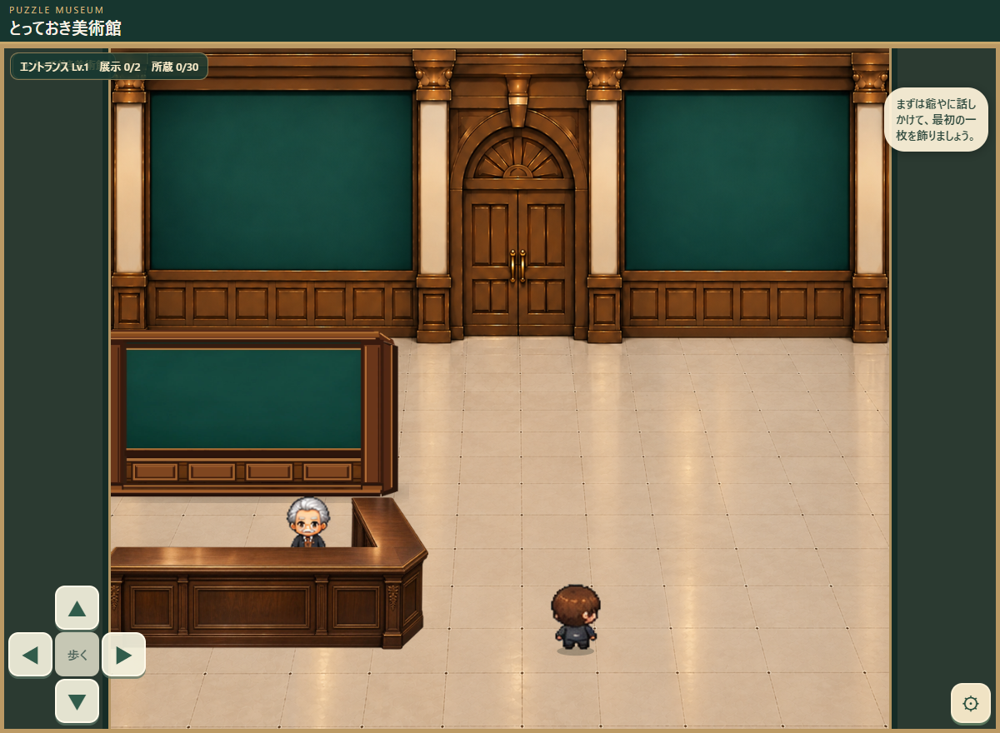

とっておき美術館｜左右の仕切り壁


右壁を指でドラッグして移動できます。下のスライダーで左右・上下・幅・高さも変更可能です。左壁とカウンターは動きません。
左壁：X=-6、Y=200、横幅215、高さ122（固定）。カウンター：X=-10、Y=318、横幅233、高さ107（固定）。右壁の初期位置は左右対称の仮置きです。
どちらも背景透過の独立PNG（860×488px）。写真・額縁・台紙は付けていません。右版は左版の左右を反転したもので、柱の奥行き方向も反転しています。
確認用プレビューです。背景とキャラクターは変更していません。右壁の配置は未承認・未実装で、実ゲームのスクリーンショット上に独立素材を重ねています。決まった配置はコピーして送ってください。